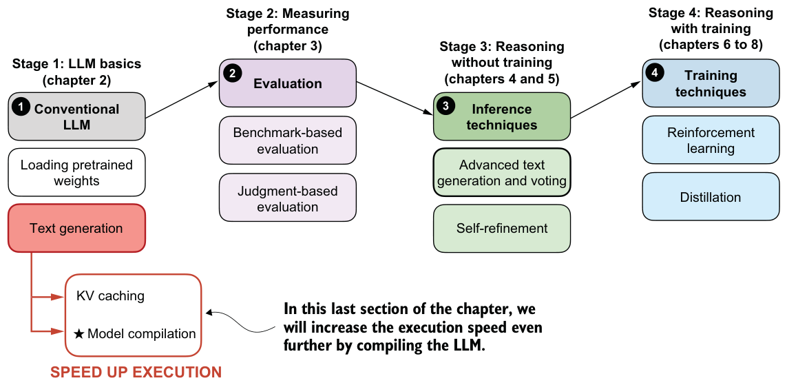

2.9Faster inference via PyTorch model compilation
In the previous section, we covered KV caching as a technique to improve runtime efficiency as shown in the overview in figure 2.17.

As shown in figure 2.17, in this remaining section of this chapter, we will apply another technique that can substantially speed up model inference: model compilation using torch.compile. In simple terms, torch.compile analyzes the model’s internal computation graph and tries to turn groups of operations into more optimized kernels, which reduces Python overhead and other execution inefficiencies. This can improve runtime performance during text generation, especially when we call the same model code repeatedly in a loop.
That will matter later when we run larger evaluations and more elaborate reasoning workflows, where even modest per-step speedups can save substantial total runtime. We can compile the model as follows:
major, minor = map(int, torch.__version__.split(".")[:2])
if (major, minor) >= (2, 8):
# This avoids retriggering model recompilations
# in PyTorch 2.8 and newer
# if the model contains code like self.pos = self.pos + 1
torch._dynamo.config.allow_unspec_int_on_nn_module = True
model_compiled = torch.compile(model)If you are using a Mac with Apple Silicon and encounter an InductorError, please make sure to use PyTorch 2.9 or newer.
It is worth noting that the first execution using the compiled model may be slower than usual due to the initial compilation and optimization steps. To better measure the performance improvement, we will repeat the text generation process multiple times.
To begin, we will test this using the noncached version of the generation function. The code in listing 2.5 is similar to what we used before except that we run it three times in a row. The code execution may take a few minutes to finish, depending on the system.
for i in range(3): start_time = time.time()
generated_ids = []
for token in generate_text_basic_stream(
model=model_compiled,
token_ids=input_token_ids_tensor,
max_new_tokens=max_new_tokens,
eos_token_id=tokenizer.eos_token_id
):
token_id = token.squeeze(0).tolist()
print(
tokenizer.decode(token_id),
end="",
flush=True
)
next_token_id = token.squeeze(0)
generated_ids.append(next_token_id)
end_time = time.time() if i == 0:
print("\n\nWarm-up run")
else:
print(f"\n\nTimed run {i}:")
output_token_ids_tensor = torch.cat(generated_ids, dim=0)
generate_stats(output_token_ids_tensor, tokenizer, start_time, end_time)
print(f"\n{30*'-'}\n")The output is as follows:
Large language models are artificial intelligence systems that can
understand, generate, and process human language, enabling them toperform a wide range of tasks, from answering questions to writing
articles, and even creating creative content.
Warm-up run
Time: 11.68 sec
3 tokens/sec
------------------------------
Large language models are artificial intelligence systems that can
understand, generate, and process human language, enabling them to
perform a wide range of tasks, from answering questions to writing
articles, and even creating creative content.
Timed run 1:
Time: 6.78 sec
6 tokens/sec
------------------------------
Large language models are artificial intelligence systems that can
understand, generate, and process human language, enabling them to
perform a wide range of tasks, from answering questions to writing
articles, and even creating creative content.
Timed run 2:
Time: 6.80 sec
6 tokens/sec
------------------------------As we can see from the results, the compiled model achieves a slight improvement in speed, with around 6 tokens per second compared to the previous 5 tokens per second.
Next, let’s see how the KV cache version performs in comparison, using the same code as before except for swapping generate_text_basic_stream with generate_text_
basic_stream_cache.for i in range(3):
start_time = time.time()
generated_ids = []
for token in generate_text_basic_stream_cache(
model=model_compiled,
token_ids=input_token_ids_tensor,
max_new_tokens=max_new_tokens,
eos_token_id=tokenizer.eos_token_id
):
token_id = token.squeeze(0).tolist()
print(
tokenizer.decode(token_id),
end="",
flush=True
)
next_token_id = token.squeeze(0)
generated_ids.append(next_token_id)
end_time = time.time()
if i == 0:
print("\n\nWarm-up run")
else:
print(f"\n\nTimed run {i}:")
output_token_ids_tensor = torch.cat(generated_ids, dim=0)
generate_stats(
output_token_ids_tensor, tokenizer, start_time, end_time
)
print(f"\n{30*'-'}\n")The output is as follows:
Large language models are artificial intelligence systems that can
understand, generate, and process human language, enabling them to
perform a wide range of tasks, from answering questions to writing
articles, and even creating creative content.
Warm-up run
Time: 8.07 sec
5 tokens/sec
------------------------------
Large language models are artificial intelligence systems that can
understand, generate, and process human language, enabling them to
perform a wide range of tasks, from answering questions to writing
articles, and even creating creative content.
Timed run 1:
Time: 0.60 sec
68 tokens/sec
------------------------------
Large language models are artificial intelligence systems that can
understand, generate, and process human language, enabling them to
perform a wide range of tasks, from answering questions to writingarticles, and even creating creative content.
Timed run 2:
Time: 0.60 sec
68 tokens/sec
------------------------------As we can see based on the outputs, the model generation speed improved from 29 tokens per second for the uncompiled model with KV cache to 68 tokens per second when the same model is compiled (on a Mac Mini M4 CPU), which is more than a two-fold speed-up.
If you don’t see any improvement, try running torch.compile with the "max-autotune" mode instead of the default settings. For instance, replace
model = torch.compile(model)with
model = torch.compile(model, mode="max-autotune")